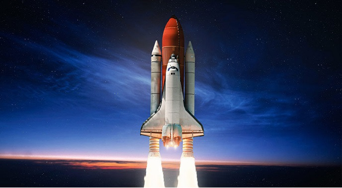

Я завжди цікавився протсорами Космосу. Він був дуже великий і цікавий.
Зараз космос – це все, що існує за межею земної атмосфери. Таке поняття космічного простору припускає його нескінченність.
“Косомос постійно змінюється”
Більш детальніше тут
